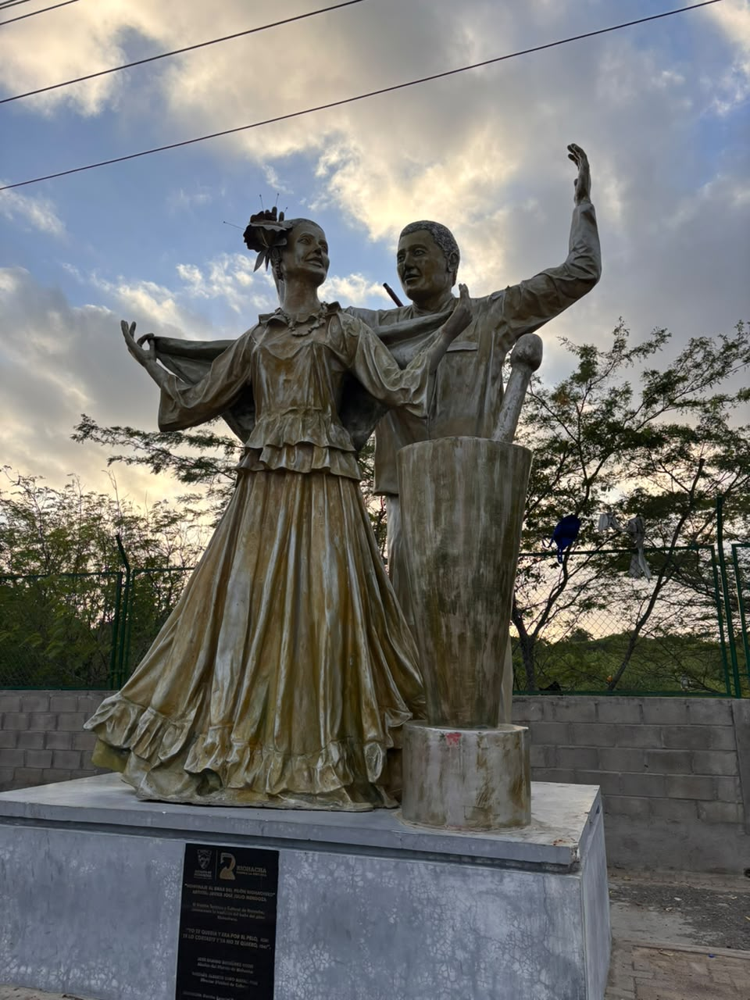
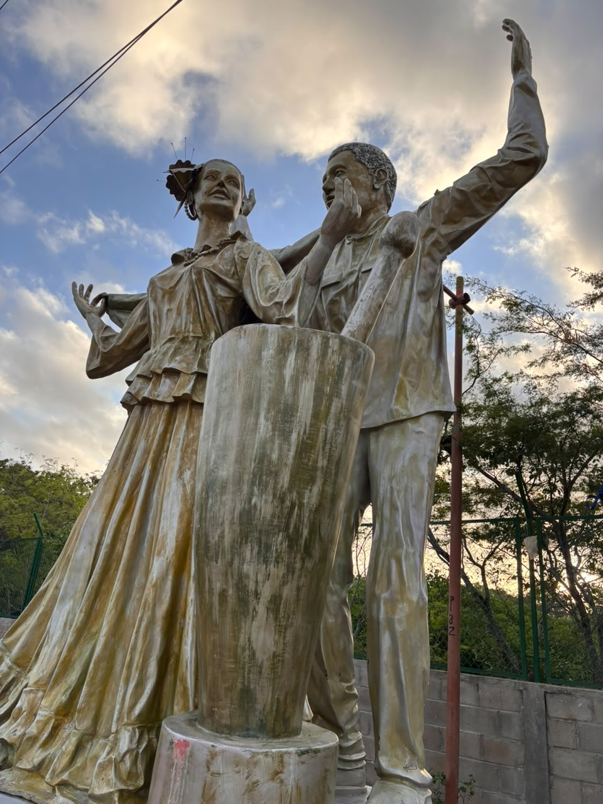
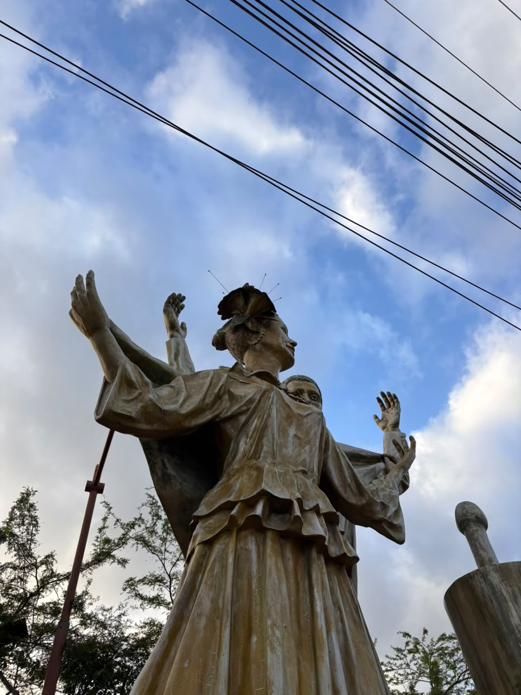
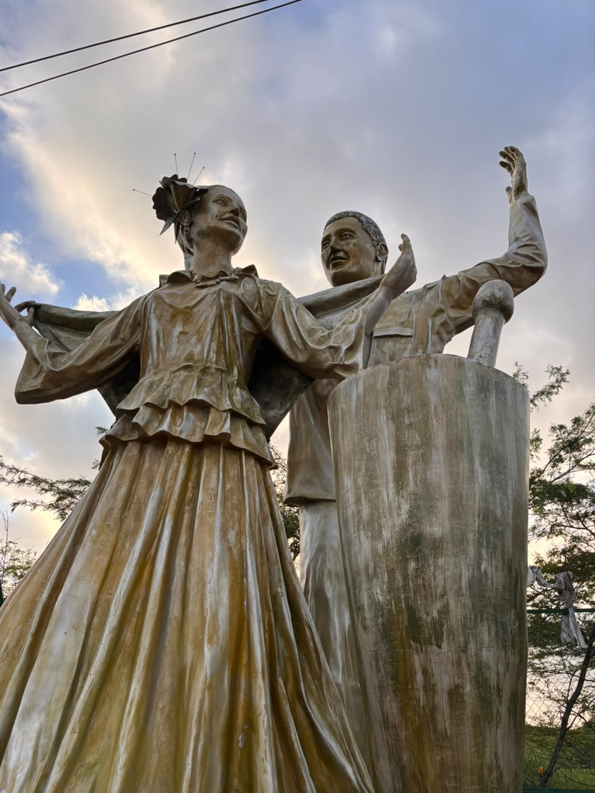
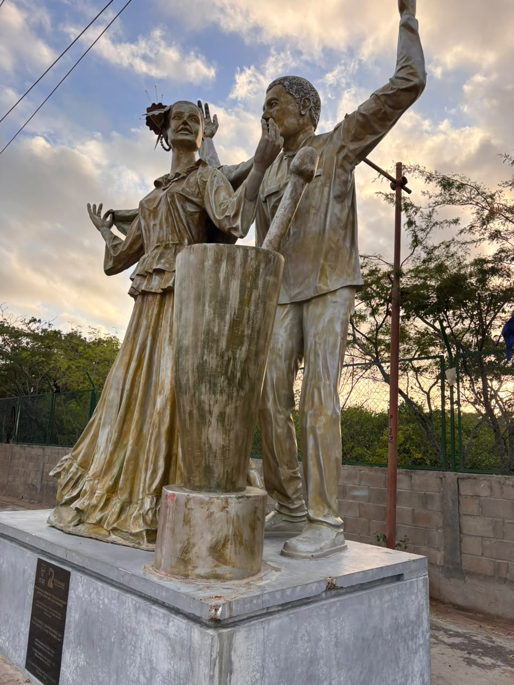
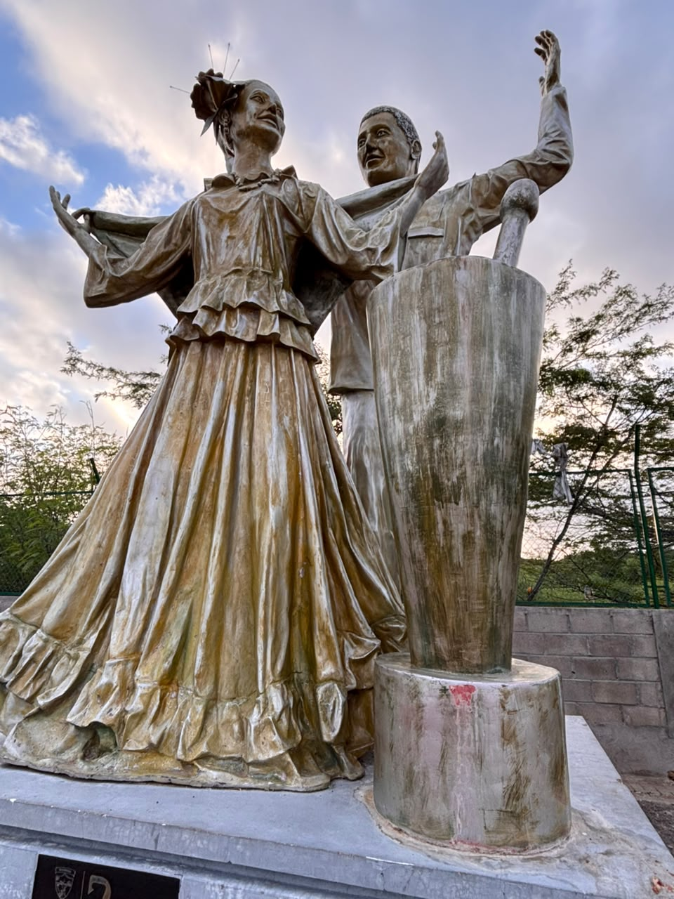
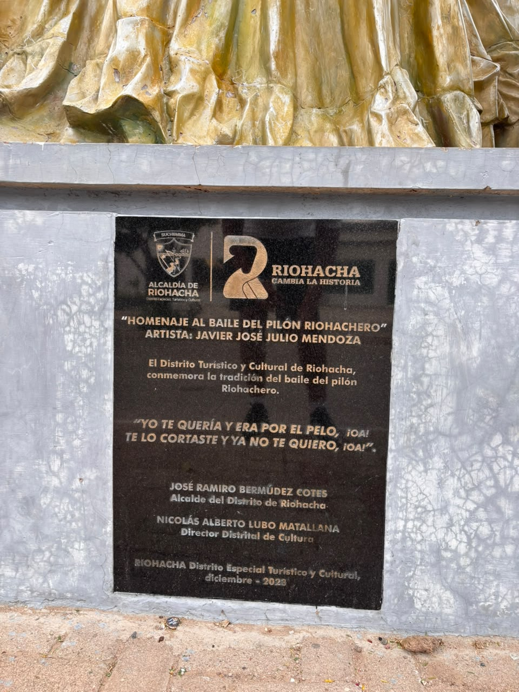

Bienvenido/a. Por favor completa este breve formulario. Tu información nos ayuda a mejorar la experiencia turística.
Personaje Histórico

La Mujer Pilandera Wayuu
Las pilanderas eran mujeres indígenas wayuu que cumplían un rol fundamental en la vida cotidiana de sus comunidades. Su nombre proviene del pilón, instrumento ancestral de madera usado para moler y desgranar el maíz, la yuca y otros granos esenciales en la alimentación de La Guajira.
Más allá de su labor doméstica, estas mujeres eran portadoras y transmisoras de la memoria cultural wayuu: sus cantos durante el pilado, sus historias y su sabiduría pasaban de generación en generación alrededor del pilón.
— Tradición oral wayuu
Reseña Histórica
El Monumento Las Pilanderas se erige en el malecón de Riohacha como símbolo vivo de la identidad cultural del pueblo guajiro. La obra fue concebida para inmortalizar la figura de las mujeres wayuu que durante siglos sostuvieron la economía doméstica y la tradición de la región mediante el pilado manual de granos.
Riohacha, fundada en el siglo XVI, fue desde sus orígenes un territorio de confluencia entre la cultura española y la indígena wayuu. En este contexto histórico, las pilanderas representan la resistencia y permanencia de las tradiciones ancestrales frente a la colonización.
El monumento fue instalado como parte de los esfuerzos del municipio por recuperar y visibilizar el patrimonio cultural inmaterial de La Guajira, reconociendo el papel protagónico de la mujer indígena en la construcción de la identidad regional.
Significado Cultural
🌽 El Pilón como símbolo
El pilón no era solo una herramienta: representaba el punto de encuentro comunitario donde las mujeres compartían saberes, resolvían conflictos y fortalecían los lazos del clan.
👩 La mujer wayuu
En la cultura wayuu la mujer ocupa un lugar central: es ella quien define el linaje, administra los bienes del clan y transmite la identidad cultural. Las pilanderas encarnan ese poder femenino ancestral.
🎵 El canto del pilado
Mientras pilaban, las mujeres entonaban canciones tradicionales llamadas jayeechi, género musical wayuu declarado Patrimonio Cultural Inmaterial por el Ministerio de Cultura de Colombia.
🧶 Legado vivo
El monumento recuerda que la cultura wayuu no es historia pasada sino presente activo: hoy miles de mujeres wayuu continúan tejiendo, cocinando y cantando en La Guajira.
Importancia para Riohacha y La Guajira
Patrimonio
Es uno de los monumentos más fotografiados de Riohacha y referente obligado del turismo cultural en La Guajira.
Identidad
Representa el orgullo guajiro y la reivindicación de los pueblos indígenas como fundadores de la cultura regional.
Turismo
Atrae visitantes nacionales e internacionales que llegan al malecón de Riohacha motivados por conocer la cultura wayuu.
Línea de Tiempo
Fundación de Riohacha
Los españoles llegan al territorio wayuu. Las pilanderas ya formaban parte esencial de la vida cotidiana indígena.
Resistencia cultural wayuu
A pesar de la colonización, el pueblo wayuu preservó sus tradiciones. El pilado del maíz continuó siendo práctica central en las comunidades.
Reconocimiento cultural
La cultura wayuu comienza a ser reconocida oficialmente. Las artesanías y tradiciones indígenas ganan visibilidad nacional.
Instalación del monumento
Se inaugura el Monumento Las Pilanderas en el malecón de Riohacha como homenaje permanente a la mujer wayuu.
Patrimonio vivo
El monumento es símbolo turístico y cultural de Riohacha, visitado por miles de personas cada año.
Galería Fotográfica






Ubicación
Dirección: Malecón de Riohacha, Calle 1 con Carrera 8, Riohacha, La Guajira, Colombia
Horario: Acceso libre — 24 horas